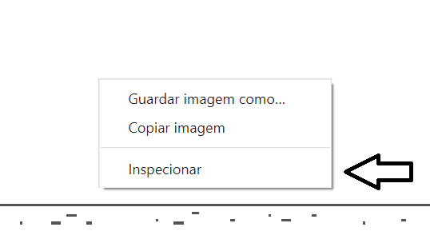
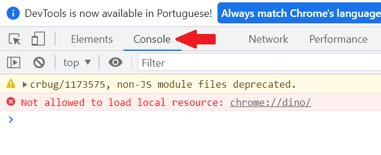
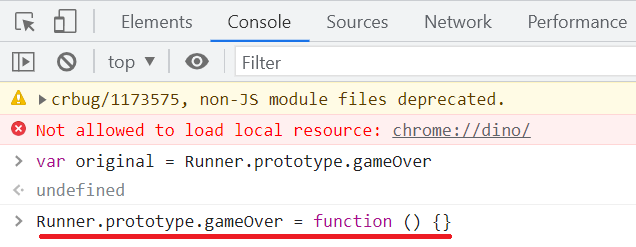

Hackeando o Dino
Imortal
- Primeiramente, acesse o site: chrome://dino
- Clique com o botão direito na tela, e clique em "inspecionar" 
- Depois, vá para aba "Console" 
- Em seguida, digite: var original = Runner.prototype.gameOver
(Isso irá nos abrir a porta para fuçar no Dino)> - Ainda na mesma tela, digite: Runner.prototype.gameOver = function () {} 
- Sendo direto, isso irá deixar o Dino Imortal
- Ainda não saia do console, poderemos adicionar mais trapaças, como vou mostrar a seguir

Super Velocidade
- Ainda em Console, digite: Runner.instance_.setSpeed(100)
- Isso irá deixar o nosso querido Dino mais rápido (na verdade, muito mais rápido)